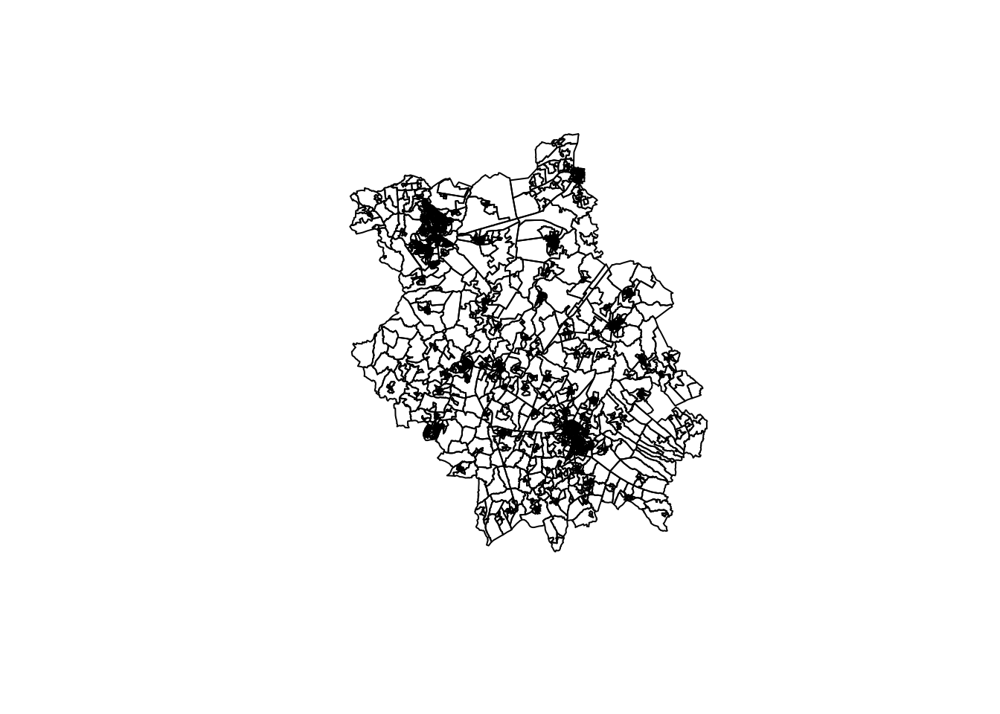
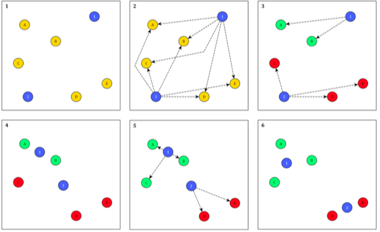
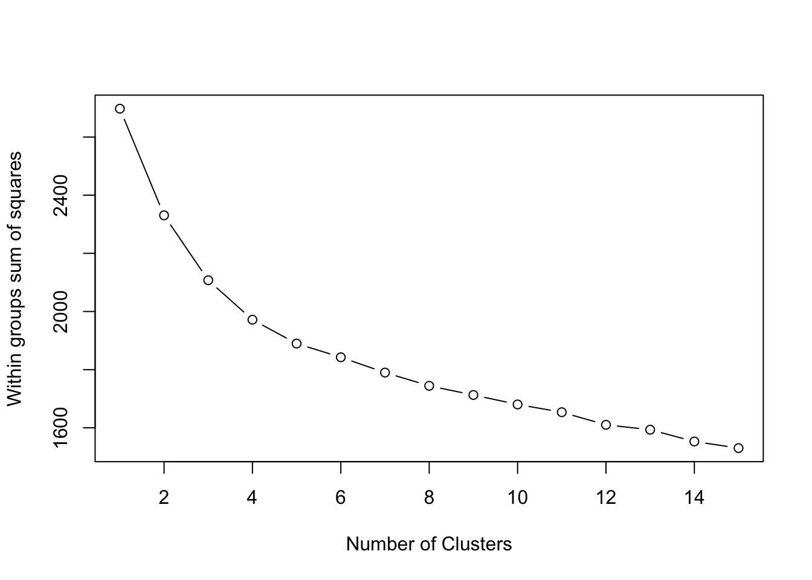
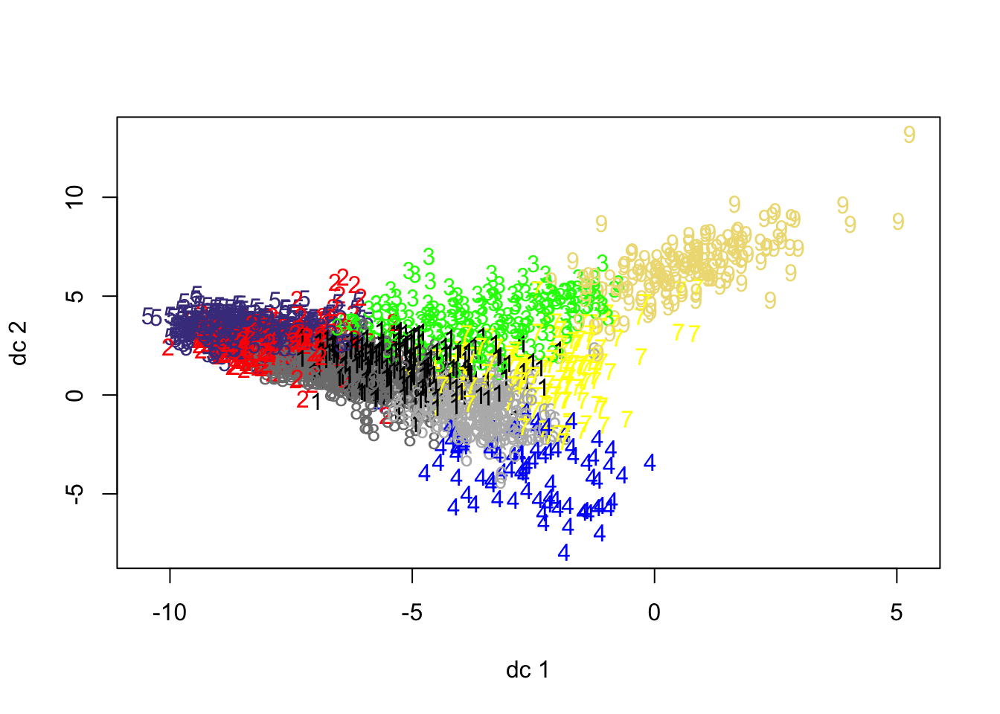
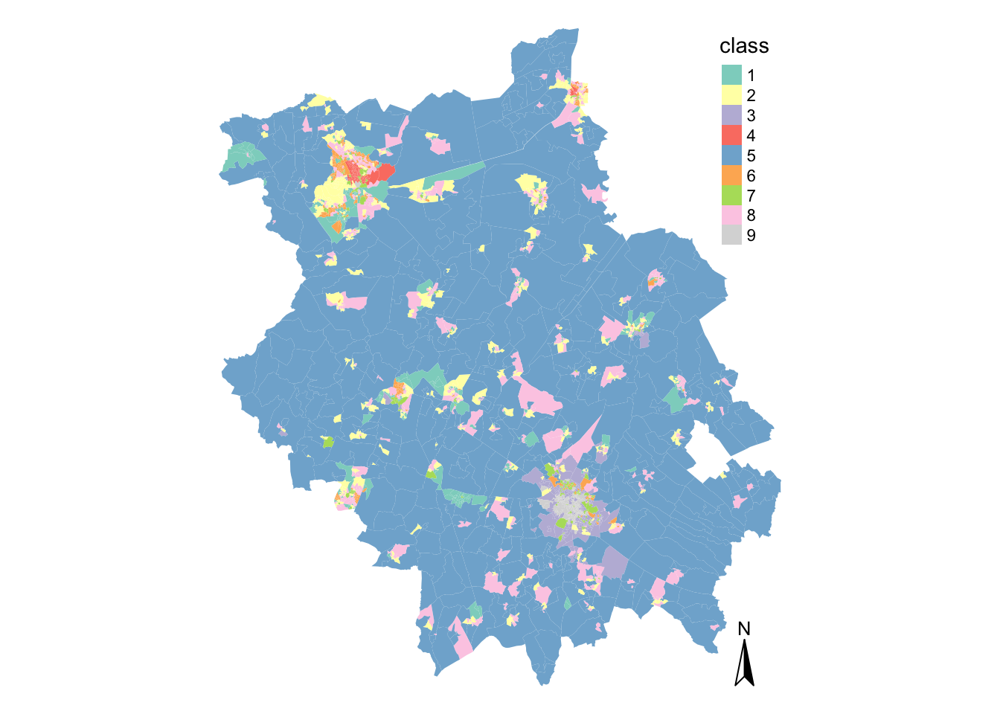
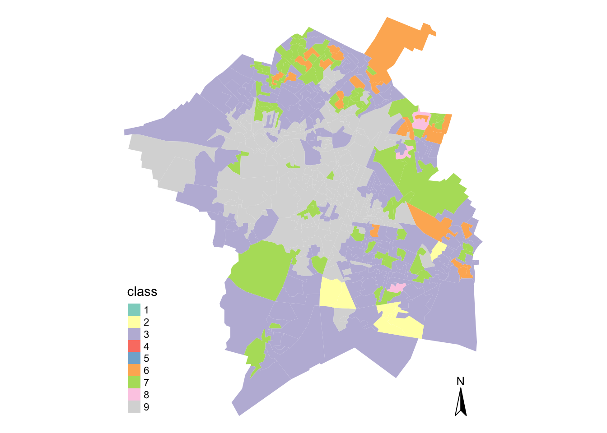
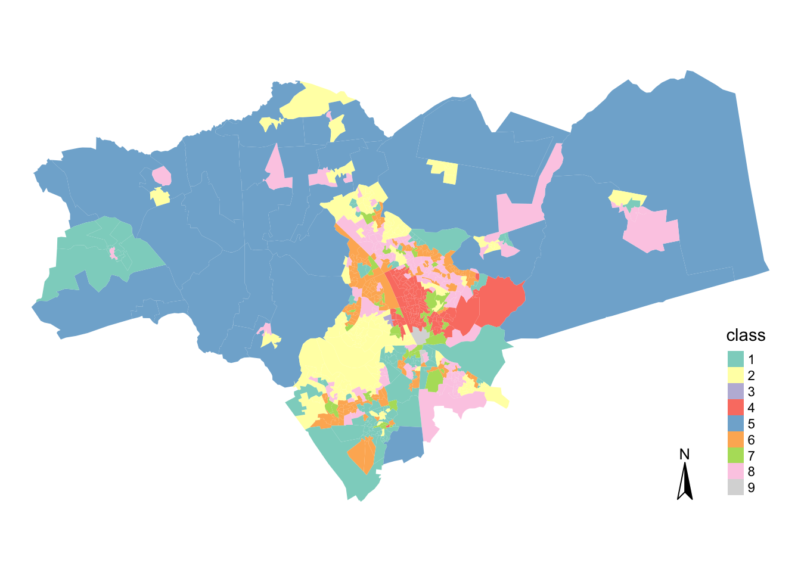
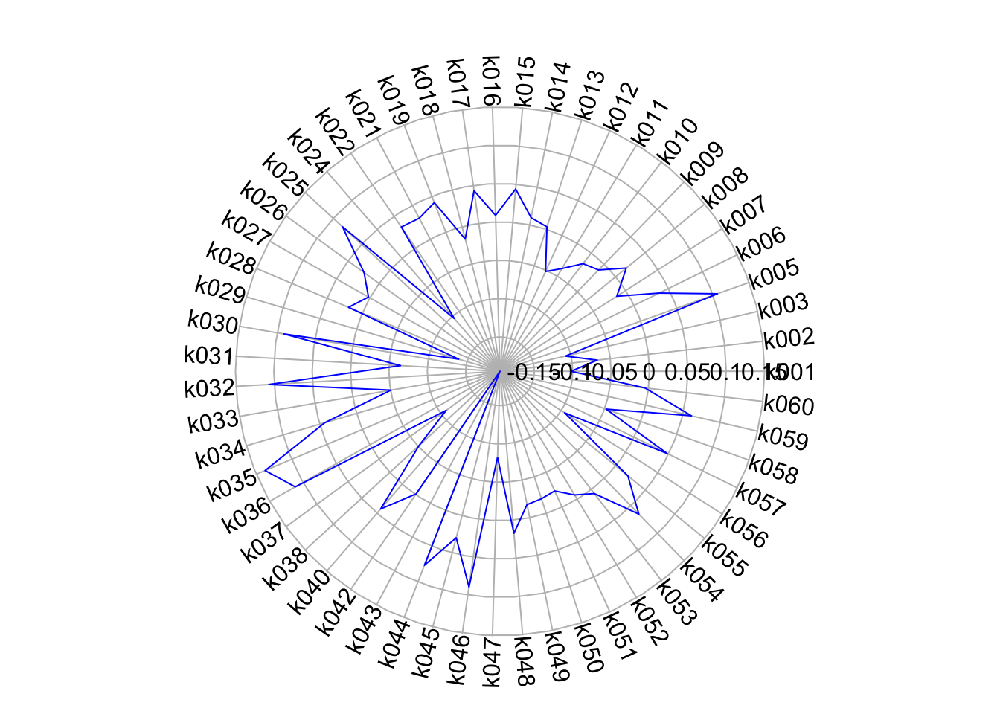
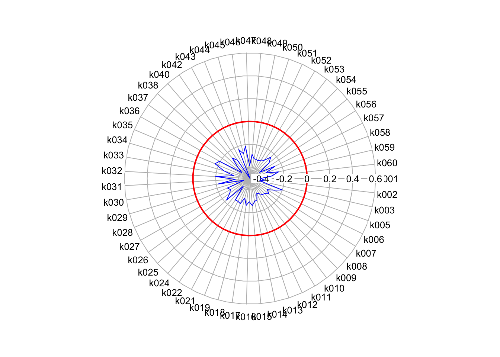
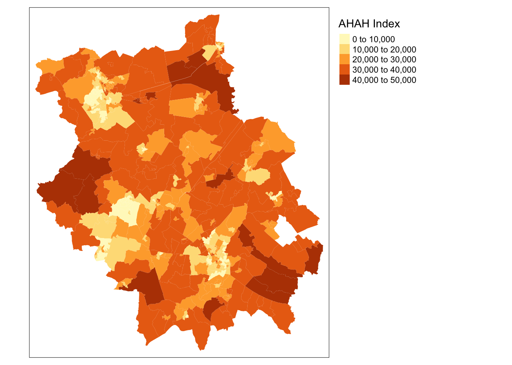

10 Geodemographic Classification
Welcome to Week 10 - our final official week - in Geocomputation!
This week, we’ll be covering Geodemographic Classification.
In previous weeks, we’ve looked at how we can map single variables to specific administrative and analyse their distribution to understand local characteristics of an area.
Geodemographic classification takes this one step further to create a more complex understanding of these characteristics - we take a selection of variables about our administrative areas and run an algorithm that clusters these areas into people of certain “similarities”. There’s a lot more behind the process, but ultimately our result is a map at the chosen spatial scale with these defined clusters that we give “names” based on their similarities.
This week, we’ll introduce you to a few of the Geodemographic Classifications that are available to you to use as open data for England as well as look to create our own “GDC” for a different area in England, Cambridgeshire (county) and Peterborough (city), which are located approximately 50 miles north of London.
Within the Extension, we’ll look at a few additional Indices that you should be aware of moving forwards in Geocomputation, including revisitibg the Index of Multiple Deprivation and understand its constituent domains as well as the Public Transport Accessibility Layer.
Week 10 in Geocomp
This week’s content introduces you to Geodemographic Classification.
We have four areas of work to focus on:
- Open Geodemographic Classifications
- Geodeomographic Classification Methodology
- Geodemographic Classification in R
- Extension: Understanding Index Construction via IMD
This week’s content is split into 4 parts:
- Workshop Housekeeping (10 minutes)
- What is Geodemographic Classification? (30 minutes)
- A Typical Geodemographic Classification Workflow (30 minutes)
- Implementing Geodemographic Classification in R (60 minutes)
- Extension: Additional Indices for use within Geocomputation (10 minutes)
This week, we have 2 short lectures within this week’s main workshop content - we do not have any assignments this week.
Learning Objectives
By the end of this week, you should be able to:
- Explain what is a Geodemographic Classification (GDC).
- Access and utilise already existing GDCs.
- Describe the typical GDC workflow and its limitations.
- Implement a GDC classification in R.
- Recall several pre-created GDCs and Indices that are available to use in spatial analysis.
We’ll look to create our GDC for our new area of focus: the county of Cambridgeshire and the connected/associated city of Peterborough. (A long story short - Peterborough is in the county of Cambridgeshire, but in 1998, the city became autonomous of Cambridgeshire county council as a unitary authority. It does continues to form part of the county for ceremonial purposes, including administrative data purposes - as a result, we treat the two as a single spatial entity, although recognise Peterborough as autonomous. Who said administrative boundaries were easy?!).
To complete this analysis, we’ll be using two new datasets:
- 2011 Census Data for Cambridge and Peterborough: a csv containings an aggregated representation of each different census variable for each Output Area (pre-prepared for us!).
- Output Area Boundaries: Output Area (OA) administrative boundaries for Cambridge and Peterborough.
Due to the complexity in creating a GDC from scratch, we’ll be using already prepared data to conduct our analysis.
Workshop Housekeeping
Let’s get ourselves ready to start our lecture and practical content by first downloading the relevant data and loading this within our script.
Setting up your script
Open a new script within your GEOG0030 project (Shift + Ctl/Cmd + N) and save this script as
wk10-geodemographic-classification.r.At the top of your script, add the following metdata (substitute accordingly):
Dependencies (aka libraries)
Now we’ll install the libraries we need for this week.
In addition to those libraries you should now be familiar with, we will need to install and use:
Formula: for correlation analysisHmisc: for data analysisfpc: for visualising cluster assignment (you may have this installed from our use of DB-Scan previously)plotrix: to create our radial plots
Remember to use the install.packages("package") command in your console.
- Within your script, add the following libraries for loading:
# Libraries used in this script:
library(tidyverse)
library(here)
library(magrittr)
library(sf)
library(tmap)
library(RColorBrewer)
library(Formula)
library(Hmisc)
library(fpc)
library(plotrix)Remember to select the lines of code you want to run and press CMD (Mac)/CTRL(Windows) + Enter/Return - we won’t remind you to run each line of code in the remainder of the practical sessions.
Datasets for this week
This week, in a rarity for Geocomputation, we will be used pre-processed data for our Geodemographic Classification.
You’ll need to download three datasets:
| Dataset | File Type | Link |
|---|---|---|
| Output Areas for Cambridgeshire and Peterborough | shp |
Download |
| Prepared Classification Variables for Cambridgeshire and Peterborough | csv |
Download |
| Variable Look Up Table | csv |
Download |
Once downloaded, copy over these files into your data –> raw –> gdc folder (i.e. create a new gdc folder!).
This is all the data we’ll need for this week’s practical.
What is Geodemographic Classification?
Put simply, geodemographics is the ‘analysis of people by where they live’ (Harris et al. 2005) and involves the classification of geographical areas based on the socioeconomic characteristics of their residents (Cockings et al, 2020).
To summarise the general geodemographic classification “GDC” workflow succintly, a set of variables are selected by the researcher that represent the characteristics by which the neighbourhoods should be classified, whether looking at demographics, including age, ethnicity, and family or household structure, or socio-economic characteristics, such as employment status and occupation, education and qualification levels, income or income proxies.
These variables are provided at an aggregated spatial scale, representative of the neighbourhoods that will be studied (e.g. Output Areas, Lower Super Output Areas, Workplace Zones). An algorithm is then used to cluster neighbourhoods together that have similarities across these variables.
The researcher then assigns these groups of neighbourhoods identities by giving them labels (names) and associated “pen profiles” that qualitatively describe the variables seen within the cluster. In most cases, the final output of a GDC is a map highlighting these different clusters and their location with one another.
This output can then be used in further analysis and within other applications.
Lecture: An Introduction to Geodemographic Classification
This week’s first lecture provides you with a general introduction into GDCs and their history, applications and limitations.
The lecture is further expanded upon below, with examples of the various open GDCs mentioned in the lecture for our area of interest, Cambridgeshire and Peterborough.
GDCs and the role of geography
A GDC entails representing the individual and collective identities that are manifest in observable neighbourhood structure (Longley 2012).
As a result, it has traditionally fallen into the nomothetic approach to geographic enquiry - emphasizing the shared social, economic, and demographic characteristics of different types (or classes) of neighborhoods, independent of their locations relative to unique places.
As such, a type of neighborhood may be widely scattered across a territory or jurisdiction. Geodemographic profiles thus provide summary indicators of the commonalities of social structure that link different locations (Longley, 2017).
These “spatial” commonalities however do not become evident within the GDC process until the outputs are mapped - and this spatial distribution can then be used to help create the identities (e.g. city elites, rural retirees or inner-city families). Instead, the role of “space” per se within GDCs is part of much of the theory that underlines the success of GDCs to “work” in the first place.
As we know as geographers and spatailly-enabled thinkers, “everything is related to everything else, but near things are more related than distant things” (Tobler, 1970) - and this often stands true in terms of the formation of communities.
An underlying concept in sociology is homophily, where there is a tendency of individuals to associate and bond with those who are similar to themselves.
This, alongside Tobler’s Law, can help us conceptualise why similar people and households and co-locate, forming communities and neighbourhoods that are relatively homogenous.
Furthermore, once an area is established, it encourages others of similar backgrounds and characteristics to also move to the same area - and benefit from whatever “conditions” attracted the original households, whether it is low house prices, proximity to certain instiutions or even planned housing projects.
Thus, whilst space will ultimately be a factor in the cluster results, it is not taken into account during the clustering as a variable itself! This is one important thing to remember, particularly after the previous few weeks where we have looked at clustering algorithms that do take into account space as a direct varaible, such as DB-Scan.
Applications of GDCs
GDCs are a useful means on segmenting the population into distinctive groups in order to effectively channel resources.
Such classifications have been effective deductive tools for marketing, retail and service planning industries due to the assumed association between geodemographics and behaviour.
For instance, typically a classification at the broadest level may distinguish cosmopolitan neighbourhoods with high proportions of young and newly qualified workers from suburban neighbourhoods with high proportions of settled families.
Whilst most geodemographic products are built within the commercial sector and sold by vendors, increasingly more open source alternatives are available, particularly for the UK where GDCs are a prominent area of research within Quantitative Geography departments.
(Open) GDCs in the UK (and its divisions)
The UK is a hotbed of GDC research, with much of it occuring at UCL (and its incredibly productive PhD students within the CDRC, spearheaded by Professor Paul Longley) and also the various other Universities, where many of these former PhD students have moved to and set up their own CDRC partnering research groups.
Other active GDC institutions include the Office for National Statistics (ONS), who were responsible for (with the University of Leed) the first openly available GDC in 2005, and the University of Southampton, which focuses on the “workplace” version of the more general GDC available for the UK and/or England and Wales (see below).
Prior to the ONS and their GDC, the majority of GDC research and application in the UK occured “behind closed doors” with commercial firms such as Experian and CACI Limited creating and utilising their own GDCs (MOSAIC and ACORN respectively) for in-house applications.
Now, particularly with the push for Open Data in the UK since the beginning of the millenium (and all the data portals we’ve seen pop up since data.gov.uk was first online in 2010), we have access to a huge amount of data that is enabling research into new types of GDCs, from the general purpose and original “Output Area Classifcation” to the newly created Internet User Classification, all of which are openly available and free to download and use.
We utilise this in our workbook today, where I’ve created maps of several of the openly available GDCs for our area of interest today, Cambridgeshire and Peterborough.
Output Area Classification
The Output Area Classification (OAC) GDC was the original GDC created by the ONS and the University of Leeds.
The first OAC was created using 2001 census data at the output scale. Each area was assignment one of seven clusters, based on the socio‐economic attributes of the residents of each area. The classification used cluster analysis to reduce 41 census variables to a single socio‐economic indicator (Vickers and Rees, 2007).
The OAC was updated for 2011 census data by a team of researchers across several universities and published in 2016. It summarizes the social and physical structure of neighborhoods using data from the 2011 UK Census, with an updated methodology that also included a user engagement exercise. The 2011 OAC comprises 8 Supergroups, 26 Groups, and 76 Subgroups (Gale et al, 2016).
The OAC supergroups for Cambridgeshire and Peterborough area are shown here:
Note, there is a specific colour scheme to use with the Output Area Classification (and many of the GDCs!) which is not applied here.
## Reading layer `E47000008' from data source `/Users/Jo/Code/GEOG0030/data/raw/gdc/Output_Area_Classification_2011/Combined_Authorities/E47000008/shapefiles/E47000008.shp' using driver `ESRI Shapefile'
## Simple feature collection with 2540 features and 2 fields
## geometry type: MULTIPOLYGON
## dimension: XY
## bbox: xmin: 501879.2 ymin: 236168.1 xmax: 571833.4 ymax: 318013.3
## CRS: 27700## Warning: The shape opa_shp is invalid. See sf::st_is_validIn addition to the above general Output Area Classification for the entirety of the UK, an additional GDC was created specifically for London and its respective output areas, known as the London Output Area Classification (LOAC).
You can find the LOAC here on the CDRC website (alongisde interactive versions of all the maps displayed in this workbook).
These classifications were conducted at Output Area scale, which usually consists of approximately 100 individuals and 40 households.
Scales of Analysis
As you should know, normally, I would not advocate running an analysis or aggregation at this scale (with the Lower Super Output Area as my recommended minimum scale), but GDCs are often created on data of this scale of resolution.
Despite this availability, you should however be cautious and conscientious with your results as, although the data is aggregated and thus anonoymised, this fine resolution can still mean that those living in the OAs you are using can often “identify” themselves within the data and ultimately your resulting categorisation of them.
I still very much advocate that any analysis directly to do with public health should always occur at least the LSOA scale.
Classification of Workplace Zones
A relativley new GDC to enter into the UK’s growing collection is a set of GDCs developed by researchers at the University of Southampton (my PhD alma mater!) and the ONS.
With their Classification of Workplace Zones, (COWZ) the researchers developed a novel classification based on the characteristics of workers and workplaces within local areas at two spatial scales: 1) England and Wales and 2) the UK (i.e. England, Wales, Scotland and Northern Ireland).
The COWZ-EW is a classification of Workplace Zones for England and Wales.
The COWZ-UK is a classification of Workplace Zones for the UK.
The GDCs used data from the 2011 censuses from England and Wales, Scotland and Northern Ireland to create the two GDCs.
The GDCs are created at a unique spatial scale, known as the Workplace Zones (hence the title, Classification of Workplace Zones). Unlike the different levels of Output Areas, there is no hierarchical structure. There are 60,709 Workplace Zones in the UK.
The openly available classification provides important new insights into the characteristics of workers and workplaces at the small area level across the UK (or England and Wales), which will be useful for analysts in a range of sectors, including health, local government, transport and commerce (Cockings et al, 2020).
The England and Wales Classification of Workplace Zone for Cambridgeshire and Peterborough area is shown here:
## Reading layer `COWZ_EW_2011_BFC' from data source `/Users/Jo/Code/GEOG0030/data/raw/gdc/Classification_of_Workplace_Zones_EnglandWales/Shapefiles/COWZ_EW_2011_BFC.shp' using driver `ESRI Shapefile'
## Simple feature collection with 53578 features and 6 fields
## geometry type: MULTIPOLYGON
## dimension: XY
## bbox: xmin: 82672 ymin: 5342.699 xmax: 655598.3 ymax: 657534.1
## CRS: 27700## Reading layer `E47000008' from data source `/Users/Jo/Code/GEOG0030/data/raw/gdc/Internet_User_Classification/Combined_Authorities/E47000008/shapefiles/E47000008.shp' using driver `ESRI Shapefile'
## Simple feature collection with 487 features and 1 field
## geometry type: MULTIPOLYGON
## dimension: XY
## bbox: xmin: 501877.8 ymin: 236172.9 xmax: 571830.7 ymax: 318016.5
## CRS: 27700Interestingly enough, we can see much of Cambridgeshire and Peterborough are designated as rural workplace zones, although we can certainly see the two major cities (Cambridge and Peterborough), with it’s suburbs and “top jobs”. Also interesting to identify the manufacturing and distributions areas!
In addition to the above general Classification of Workplace Zonesn for the entirety of the UK, an additional GDC was created specifically for London and its respective output areas, known as the London Workplace Zone (LWZC) (Singleton and Longley, 2019).
You can find the LWZC here on the CDRC website (alongisde interactive versions of all the maps displayed in this workbook).
Internet User Classification
Another new GDC entry is the CDRC Internet User Classification (IUC). The IUC is a bespoke geodemographic classification that describes how people residing in different parts of Great Britain interact with the Internet.
For every Lower Super Output Area (LSOA) in England and Wales and Data Zone (DZ) (2011 Census Geographies), the IUC provides aggregate population estimates of Internet use (Singleton et al. 2020) and provides insights into the geography of the digital divide in the United Kingdom.
“Digital inequality is observable where access to online resources and those opportunities that these create are non-egalitarian. As a result of variable rates of access and use of the Internet between social and spatial groups (..), this leads to digital differentiation, which entrenches difference and reciprocates digital inequality over time (Singleton et al. 2020).”
As you’ll see below, the IUC is created at the Lower Super Ouput Area scale.
We can look the various IUC categories applied within Cambridgeshire and Peterborough and their respective locations.
## Reading layer `E47000008' from data source `/Users/Jo/Code/GEOG0030/data/raw/gdc/Internet_User_Classification/Combined_Authorities/E47000008/shapefiles/E47000008.shp' using driver `ESRI Shapefile'
## Simple feature collection with 487 features and 1 field
## geometry type: MULTIPOLYGON
## dimension: XY
## bbox: xmin: 501877.8 ymin: 236172.9 xmax: 571830.7 ymax: 318016.5
## CRS: 27700It seems the city of Cambrige has a wide variety of internet users, with Cultural Creators, Professionals, the Youthful Urban Fringe and Mainstream users prominent within the area - a pattern we’d likely expect.
A Typical Geodemographic Classification Workflow
Looking through our various GDCs for Cambridgeshire, we can see that there is indeed some really interesting (and if not, common sense!) clustering to our different supergroups and workplace zones.
GDCs can provide insight to the complex characteristics of local areas through a single measurement - but how do we reduce many variables into a single classification scheme? And how do we determine the labels for the resulting classifications?
Lecture: Geodemographic Classification Methodology
The second of this week’s lecture provides you with an indepth step-by-step workflow on how to create a GDC.
The GDC workflow presented in the above lecture is summarised below.
Creating a Geodemographic Classification
As you would have heard in our lecture above, there are seven main steps to creating a GDC.
1) Choose elements / factors
The first step to creating a geodemographic classification is considering what data to include and at what granularity. Finer level data will allow you to capture more intricate variations and reduce any issues of ecological fallacy. However, we also require a good number of useful variables in order to effectively segment neighbourhoods.
2) Select associated quantifiable variables
To capture these elements or factors in your GDC, you’ll need to translate them into quantifiable variables that you can find within a specific data source, such as the census, at the scale at which you want to analyse them.
3) Standardise variables
To reduce the effects of unbalanced base population sizes across each of the small area units (Output Areas) the variables all need to be transformed into percentages. Furthermore, so that erratic values within variables do not inadvertently dominate the clustering process, the input variables need to be standardised so that they each contribute an equal weight. Standardising the data will also make the final outputs much easier to interpret.
4) Measure variables for association (multi-collinearity)
It is useful to test for associations between the final selection of variables. Variables that are collinear would essentially be conveying very similar distributions. This could give a particular phenomena a higher weighting in the final classification. To check for multicollinearity, create a correlation matrix for the dataset and remove one variable from those pairs of variables that are correlated. Try to remove the variables that are correatled with other variables to leave those most unique in your selection.
5) Choose clustering method
There are several clusering algorithms that can be used to cluster variables for a GDC, but generally, most tend to use the K-Means algorithm. It is a top-down approach whereby the number of cluster groups is predefined. The algorithm seeks to reduce the sum distance between each data point and their respective cluster centre and works iteratively to produce the final cluster groupings.
6) Choose number of clusters
There is no right answer to choosing the correct number of clusters. Even making judgements using some guidance on criteria involves a level of subjectivity. Your task as a researcher is to choose an appropriate number of clusters for your geodemographic classification. You should aim to make sure your clusters are as homogeneous as possible and that each cluster group should be distinct from the other groups. The groups should also be as evenly sized as possible.
In addition, to each of these, we must also consider the compositions of the cluster groups. It is important that each of the characteristics of each cluster are distinguishable and relatable to real-life neighbourhood types.
7) Interpret findings, test and finalise them
Before any efforts are made to visualise the data, it is important you understand what it represents. The cluster centres indicate the coordinates of the centroid for each cluster group once the k-means had reached its optimum solution. It, therefore, is a good indicator of the average characteristics of each group based on the n variables that were included in the original model.
Having selected the number of clusters for the final model, there are several ways of visualising the results of a k-means clustering to help with labelling our clusters. We can create radial plots or cross-variable tables that depict the average variable score for each cluster type. In addition, we can map the location of our clusters to help understand the spatial aspects of our clusters (alongside our own local knowledge).
Formulating names for geodemographic groups is not easy and be contentious. Essentially the names are derivative of the researcher’s perceptions of the cluster centres and sometimes also consider their geographic distributions. Names should be informative, short and memorable. They should also not make unnecessary assumptions or be derogatory in any way. Have a look at the names for the GDCs shown above and see what you think - do you think they meet all of these requirements?
Summarising the GDC workflow
These seven steps summarise the process of creating a GDC. Whilst it appears relatively straight-forward, behind each step will be significant research and researcher-guided decisions on the various subjective aspects of the methodology (e.g. deciding variables, number of clusters etc.).
We’ll have a look at the required decisions by putting this all into action in today’s practical, creating a GDC for Cambridgeshire and Peterborough. Whilst this tutorial will take you through all the necessary “technical” steps behind creating a GDC, do remember, we’ve ultimately made the methodological decisions for you at each step (informed by our own research and knowledge), which provides us with a “shortcut” to what ultimatel is a very complex methodology.
Implementing Geodemographic Classification in R
In today’s practical, we will classify areas in Cambridgeshire and Peterborough based on their demographic and socio-economic characteristics, using k-means clustering.
The clustering will group cases based on their statistical similarity as exerted by the inputted variables.
As you’ve heard, GDC is a very effective means of reducing large multivariate databases into a singular, but informative, indicator.
Cases in the same group may be similar in terms of their geodemographic compositions, but they may not be geographically proximal as the technique is aspatial.
This practical will take you through all the steps necessary to create a classification: from data selection, preparation, clustering and eventually interpretation.
Note, as we’re creating a GDC for a more localised area (i.e. not the whole of England and Wales or the UK), we’ll see some differences between our classification and that of the general 2011 Output Area Classification.
Although this provides you with a pipeline in which to create your own GDC, you will see that the classification builder must make several analytical and subjective decisions in order to produce an optimum classification for a particular purpose (which we’ve done for you). Therefore, if and when creating your own “original” GDC, it must be substantiated thoroughly in research.
Hence I would very much encourage you to use an existing GDC in your Gecomputation coursework (and not create your own). Of course, if you’d like to create one during your dissertation, this will be a discussion with your supervisor.
1) Choosing Our Elements
The first aspect of any GDC is to choose the elements we want to classify. This includes “who” (individuals, adults) we’re classifying (or what, when it comes to households, OAs or postcodes, for examples), for what purpose (general, bespoke) and the scale at which we will represent them (OAs, LSOAs, workplace zones etc).
In our case, we will build a general purpose classification based on the Output Area Classification referenced above, using 2011 census data of indivduals referenced to the OA scale (instead of the OA) - but in our case, for only the Cambridgeshire and Peterborough area.
To enable this, we’ll use our 2011 census data for classification and the 2011 Output Area Administrative Boundaries to map our results.
Let’s go head and load our administrative boundaries and look at our area under investigation in a little more detail, Cambridgeshire and Peterborough.
- Load Cambridgeshire and Peterborough (CAP) OA shapefile into R and plot the LSOAs:
# Load Cambridgeshiere and Peterborough LSOA shapefile
cap_oa <- st_read("data/raw/gdc/cam_and_pet_boundaries.shp")## Reading layer `cam_and_pet_boundaries' from data source `/Users/Jo/Code/GEOG0030/data/raw/gdc/cam_and_pet_boundaries.shp' using driver `ESRI Shapefile'
## Simple feature collection with 2541 features and 5 fields
## geometry type: MULTIPOLYGON
## dimension: XY
## bbox: xmin: 501880 ymin: 236169.2 xmax: 571835.3 ymax: 318015.5
## CRS: 27700
There are 2541 CAP OAs in total, of which we can already see a huge variety in their size. The county has two major cities, Peterborough (in the north) and Cambridge (smaller entity in the South). Beyond these cities, as evident in the structure of the LSOAs, there are smaller towns, but also some OAs that are quite large due to the more rural nature of the county.
2) Select associated quantifiable variables
Now we know the elements we’re looking to classify, the next step in our GDC workflow is to select our variables that we want to use in our classification.
Whilst the 2011 Census collected hundreds of variables, the 2011 Output Area Classification we looked at earlier was actually produced with 67 variables.
The variables were selected on their informativeness and uniqueness i.e. a variable had to be comprehensive enough to simplify the complexity of the phenomena, but not too comprehensive so that variables are distinguishable.
To keep things simple for our classification, we will simply use the same 59 variables from the 2011 Output Area Classification. These variables are detailed in the ONS’s detailed methodology guide here.
We already have these variables stacked within our cam_and_pet_oac11_vars.csv - let’s go ahead and load the dataset.
- Load the
cam_and_pet_oac11_vars.csvin yourdata/raw/gdcfolder:
# Load variable table Remove the first column as it only contains ID numbers
cap_oac_variables <- read_csv("data/raw/gdc/cam_and_pet_oac11_vars.csv")[, -1]## Warning: Missing column names filled in: 'X1' [1]## [1] 2541 71You should have 2541 observations with 71 fields.
Let’s go ahead and look at our data.
- Display the first five rows of our
cap_oac_variablesdata frame:
## # A tibble: 6 x 71
## OA Total_Population Total_Households Total_Dwellings Total_Household…
## <chr> <dbl> <dbl> <dbl> <dbl>
## 1 E000… 290 119 131 131
## 2 E000… 287 122 128 128
## 3 E000… 187 97 99 99
## 4 E000… 179 78 83 83
## 5 E000… 278 117 122 122
## 6 E000… 345 139 145 145
## # … with 66 more variables: Total_Population_16_and_over <dbl>,
## # Total_Population_16_to_74 <dbl>, Total_Pop_No_NI_Students_16_to_74 <dbl>,
## # Total_Employment_16_to_74 <dbl>,
## # Total_Pop_in_Housesholds_16_and_over <dbl>,
## # Total_Population_3_and_over <dbl>, k001 <dbl>, k002 <dbl>, k003 <dbl>,
## # k004 <dbl>, k005 <dbl>, k006 <dbl>, k007 <dbl>, k008 <dbl>, k009 <dbl>,
## # k010 <dbl>, k011 <dbl>, k012 <dbl>, k013 <dbl>, k014 <dbl>, k015 <dbl>,
## # k016 <dbl>, k017 <dbl>, k018 <dbl>, k019 <dbl>, k020 <dbl>, k021 <dbl>,
## # k022 <dbl>, k023 <dbl>, k024 <dbl>, k025 <dbl>, k026 <dbl>, k027 <dbl>,
## # k028 <dbl>, k029 <dbl>, k030 <dbl>, k031 <dbl>, k032 <dbl>, k033 <dbl>,
## # k034 <dbl>, k035 <dbl>, k036 <dbl>, k037 <dbl>, k038 <dbl>, k039 <dbl>,
## # k040 <dbl>, k041 <dbl>, k042 <dbl>, k043 <dbl>, k044 <dbl>, k045 <dbl>,
## # k046 <dbl>, k047 <dbl>, k048 <dbl>, k049 <dbl>, k050 <dbl>, k051 <dbl>,
## # k052 <dbl>, k053 <dbl>, k054 <dbl>, k055 <dbl>, k056 <dbl>, k057 <dbl>,
## # k058 <dbl>, k059 <dbl>, k060 <dbl>We can see that the first few fields contain information about different population sizes (total population, households, dwellings etc) - these are the values we’ll use to standardise our variables as per the GDC workflow.
After these fields, we then have our variable fields, denoted as k0XX.
These codes are not incredibly useful for us as first-time GDC creators - but they are used due to the fact that some of the variables have long names and asa result, it is much easier to refer to them by their codes.
To get an understanding of what these variables related to, we can use our look-up table to see what these codes represent.
- Load our look-up table:
# Load variable lookup table
var_lookup <- read_csv("data/raw/gdc/2011_OAC_Raw_kVariables_Lookup.csv")Let’s take a look at what our variables represent.
- Print the contents of the
VariableNamefield:
## [1] "Total Population"
## [2] "Total Number of Households"
## [3] "Total Dwellings"
## [4] "Total Household Spaces"
## [5] "Total Population aged 16 and over"
## [6] "Total Population aged 16 to 74"
## [7] "Total Population aged 16 to 74 who are not students in Northern Ireland"
## [8] "Total Persons Employed aged 16 to 74"
## [9] "Total Population living in Households aged 16 and over"
## [10] "Total Population aged 3 and over"
## [11] "Persons aged 0 to 4"
## [12] "Persons aged 5 to 14"
## [13] "Persons aged 25 to 44"
## [14] "Persons aged 45 to 64"
## [15] "Persons aged 65 to 89"
## [16] "Persons aged 90 and over"
## [17] "Number of persons per hectare"
## [18] "Persons living in a communal establishment"
## [19] "Persons aged over 16 who are single"
## [20] "Persons aged over 16 who are married or in a registered same-sex civil partnership"
## [21] "Persons aged over 16 who are divorced or separated"
## [22] "Persons who are white"
## [23] "Persons who have mixed ethnicity or are from multiple ethnic groups"
## [24] "Persons who are Asian/Asian British: Indian"
## [25] "Persons who are Asian/Asian British: Pakistani"
## [26] "Persons who are Asian/Asian British: Bangladeshi"
## [27] "Persons who are Asian/Asian British: Chinese and Other"
## [28] "Persons who are Black/African/Caribbean/Black British"
## [29] "Persons who are Arab or from other ethnic groups"
## [30] "Persons whose country of birth is the United Kingdom or Ireland"
## [31] "Persons whose country of birth is in the old EU (pre 2004 accession countries)"
## [32] "Persons whose country of birth is in the new EU (post 2004 accession countries)"
## [33] "Main language is not English and cannot speak English well or at all"
## [34] "Households with no children"
## [35] "Households with non-dependant children"
## [36] "Households with full-time students"
## [37] "Households who live in a detached house or bungalow"
## [38] "Households who live in a semi-detached house or bungalow"
## [39] "Households who live in a terrace or end-terrace house"
## [40] "Households who live in a flat"
## [41] "Households who own or have shared ownership of property"
## [42] "Households who are social renting"
## [43] "Households who are private renting"
## [44] "Occupancy room rating -1 or less"
## [45] "Individuals day-to-day activities limited a lot or a little (Standardised Illness Ratio)"
## [46] "Persons providing unpaid care"
## [47] "Persons aged over 16 whose highest level of qualification is Level 1, Level 2 or Apprenticeship"
## [48] "Persons aged over 16 whose highest level of qualification is Level 3 qualifications"
## [49] "Persons aged over 16 whose highest level of qualification is Level 4 qualifications and above"
## [50] "Persons aged over 16 who are schoolchildren or full-time students"
## [51] "Households with two or more cars or vans"
## [52] "Persons aged between 16 and 74 who use public transport to get to work"
## [53] "Persons aged between 16 and 74 who use private transport to get to work"
## [54] "Persons aged between 16 and 74 who walk, cycle or use an alternative method to get to work"
## [55] "Persons aged between 16 and 74 who are unemployed"
## [56] "Employed persons aged between 16 and 74 who work part-time"
## [57] "Employed persons aged between 16 and 74 who work full-time"
## [58] "Employed persons aged between 16 and 74 who work in the agriculture, forestry or fishing industries"
## [59] "Employed persons aged between 16 and 74 who work in the mining, quarrying or construction industries"
## [60] "Employed persons aged between 16 and 74 who work in the manufacturing industry"
## [61] "Employed persons aged between 16 and 74 who work in the energy, water or air conditioning supply industries"
## [62] "Employed persons aged between 16 and 74 who work in the wholesale and retail trade; repair of motor vehicles and motor cycles industries"
## [63] "Employed persons aged between 16 and 74 who work in the transport or storage industries"
## [64] "Employed persons aged between 16 and 74 who work in the accommodation or food service activities industries"
## [65] "Employed persons aged between 16 and 74 who work in the information and communication or professional, scientific and technical activities industries"
## [66] "Employed persons aged between 16 and 74 who work in the financial, insurance or real estate industries"
## [67] "Employed persons aged between 16 and 74 who work in the administrative or support service activities industries"
## [68] "Employed persons aged between 16 and 74 who work in the in public administration or defence; compulsory social security industries"
## [69] "Employed persons aged between 16 and 74 who work in the education sector"
## [70] "Employed persons aged between 16 and 74 who work in the human health and social work activities industries"There are a couple of things to note here.
As you can see, it does make sense to manipulate the variables by their codes (their names can be quite long!).
Even more importantly, the variables have different statistical units in which they were measured.
Whereas some variables regard to the entire population within OA, some of them refer to households or just a part of the population (e.g. those over 16 years of age).
This information is important as we need to take the population size into account; analysing raw statistics without taking population size into account would distort the results.
For this reason, each variable needs to be standardized with the correct population group, to ensure consistency across the areas.
Standardising our variables, in terms of area and measurement scale, are our next steps in our GDC workflow.
Before we standarise our variables, we’ll extract just the three columns that we’ll need from our lookup table - the variable code, respective name and also the statistical unit at which the variable is collected.
- Refine variable look-up table:
3) Standardise variables
Before we proceed with our GDC analysis, we first need to standardize the variables between areas.
To do this, each variable needs to be divided by the appropriate population for a given area.
Before converting raw numbers into proportions, let’s take a look on the frequency of each statistical unit.
- Count the different types of statistical units within our variables:
# Tally the different types of statistical units of our variables
count(var_lookup, VariableStatisticalUnit)## # A tibble: 12 x 2
## VariableStatisticalUnit n
## <chr> <int>
## 1 Density 1
## 2 Dwelling 1
## 3 Employment_16_to_74 16
## 4 Household 9
## 5 Household_Spaces 5
## 6 Not_Students_16_to_74 4
## 7 Person 20
## 8 Person_16_Over 8
## 9 Person_16_to_74 2
## 10 Person_3_Over 2
## 11 Pop_Household_16_Over 1
## 12 SIR 1We have two variables that we do not need to convert into percentages or proportions because they are already ratios and not raw counts. Firstly, we have a density, in terms of the proportion of persons per hectare. Secondly, there is the Standardized Illness Ratio (SIR), which, as its name suggests, is a ratio.
We will still need to go ahead and transform the remaining variables to standardise them by area - luckily our approach will essentially leave these values alone and only normalise those that have a suitable denominator.
To do this, we will use a ‘double-loop’ (a loop within a loop) that takes each variable in our cap_oac_variables_std data frame and then standardises it by its appropriate denominator.
To faciliate this, we first change the field names of the “potential” demoninators within the cap_oac_variables_std data frame to match the same spelling as those within the var_lookup data frame.
This will enable us to use the lookup table within our loop to look up the right denominator to be used with each variable - and then standardise each variable by its respective denominator within the cap_oac_variables_std data frame.
In other words, our loop will:
- Take a variable field within our
cap_oac_variables_stddata frame - Use the variable field name, i.e. the variable code, to look up that specific variable in our
var_lookupdata frame - From the
var_lookupdata frame, retrieve the statistical unit associated with the data frame - Return to our
cap_oac_variables_stddata frame and divide the variable field by the values held in the respective statistical unit field contained (within thecap_oac_variables_stddata frame) for each observation (i.e. OA) in our dataset.
This loop therefore makes sure each variable is standaridsed by the appropriate denominator.
- Standardise our variables by the appropriate denominator.
# Duplicate our cap_oac_variables for data standardisation
cap_oac_variables_std <- cap_oac_variables
# Change the names of the 'potential' denominators within our
# cap_oac_Variables_std to match up with the ones used in the lookup table These
# columns are the 9-11 columns in the cap_oac_variables data frame
colnames(cap_oac_variables_std)[2:11] <- c("Person", "Household", "Dwellings", "Household_Spaces",
"Person_16_Over", "Person_16_to_74", "Not_Students_16_to_74", "Employment_16_to_74",
"Households_16_and_over", "Person_3_Over")
# For each denominator in our cap_oac_variables_std data frame
for (denom in colnames(cap_oac_variables_std)[2:11]) {
# Create a list of associated variables for that given statistical unit (j)
stat_unit_var_list <- var_lookup[11:70, ] %>% filter(VariableStatisticalUnit ==
denom) %>% dplyr::select(VariableCode)
# For each (oac) variable in our statistical unit list We call it oacvar simply
# because we cannot use simply var or variabe in our code These are 'reserved'
# variable names used by R, and not 'temporary' variable names we can use
for (oacvar in stat_unit_var_list$VariableCode) {
# Take this variable from the list (oacvar) and divide it by the required
# statistical unit (denom) Store this result and overwrite preexisting values for
# that variable
cap_oac_variables_std[, oacvar] <- cap_oac_variables_std[, oacvar]/cap_oac_variables_std[,
denom]
} # End 2nd loop
} # End 1st loopIf you check your resulting cap_oac_variables_std data frame, you should see that we have much smaller numbers in our variable values - we’ve successfully normalise our variables by area.
We can go ahead and remove the denominator fields from our cap_oac_variables_std data frame as we no longer need them.
- Remove the denominator fields from our
cap_oac_variables_stddata frame:
# Remove denominators from the data frame, as we no longer need them
cap_oac_variables_std <- cap_oac_variables_std[, -c(2:11)]We’ve now standardised our variables by area - but we also need to standardise them by “themselves” to place them on the same measurement scale.
Before we do this, we want to transform our data to account for outliers in each variable’s distribution; specifically, some variables are subject to presence of very high value outliers (e.g. k008, k022, k034).
To reduce the impact of these outliers, we will employ Inverse Hyperbolic Sine Transformation (IHS).
We’ll use this transformation approach as it was found the most effective for creating OAC2011. There are other transformations that could be employed; for instance, the original OAC2001 utilized simple logarithmic transformation.
The formula for IHS is as follows:
\[ \log(x_{i} + (x_{i}^2 + 1)^{1/2}) \]
We’ll go ahead and transform our data to reduce the impact of outliers.
- Transform variables using the IHS:
# Transform variables using IHS for every variable (bar the OA code!)
cap_oac_variables_std[, -1] <- log(cap_oac_variables_std[, -1] + sqrt(cap_oac_variables_std[,
-1]^2 + 1))Finally, before undertaking cluster analysis, we will standardize the variables into the same “measurement scale”.
While standardization between areas ensures that population size is taken into account, standardization between variables allows for an easier comparison of variables with one another and an easier interpretation of results.
The method that we will use is range standardization, which compresses the values into a range of 0 to 1.
- Standardise our variables using the range standardization approach:
# First create a function for calculating range
range_function <- function(x) {
(x - min(x))/(max(x) - min(x))
}
# X => apply function (FUN) on the entire data frame but the first column MARGIN
# => function will be applied over columns (1 indicated rows) FUN => function to
# be applied over the data
cap_oac_variables_std[, -1] <- apply(X = cap_oac_variables_std[, -1], MARGIN = 2,
FUN = range_function)Great - we now have our variables ready for analysis.
4) Measure variables for association (multi-collinearity)
Before we go ahead and run our cluster analysis, we first need to check whether any of our variables are strongly correlated with one another or not.
Whilst the purpose of the classification is to deal with the multidimensionality of the input data, the more variables we use, the harder it is to obtain efficient clusters.
As a result, including variables that are similar to one another adds additional complexity without improving our understanding and/or explanation of the resulting clusters.
We therefore should test our variables for multicollinearity and determine which should or should not be included within our final cluster analysis.
To test for multi-collinearity, we can create a correlation matrix to test for association; within R, we can use the rcorr() function within the Hmisc package you installed earlier.
- Create a correlation matrix of our variables:
# Create a correlation matrix using the rcorr function Only include the variables
# in our matrix!
cor <- rcorr(as.matrix(cap_oac_variables_std[2:ncol(cap_oac_variables_std)]))We could print out the correlation matrix, but as it’s quite big (60 columns x 60 rows x 2 dimensions [correlation coefficient and p-value]), we’ll utilise a different approach.
We will filter the matrix based on the correlation coefficient values. Before that, we will apply a flattenCorrMatrix() function found on STHDA that will transform the matrix to a long format that will ease our processing of the resulting matrix.
- Flatten our correlation matrix:
# Flatten our correlation matrix
flattenCorrMatrix <- function(cormat, pmat) {
ut <- upper.tri(cormat)
data.frame(row = rownames(cormat)[row(cormat)[ut]], column = rownames(cormat)[col(cormat)[ut]],
cor = (cormat)[ut], p = pmat[ut])
}
# Apply the function and present only rows that have the correlation coefficient
# higher than 0.7 and arrange it by the coefficient values=
flattenCorrMatrix(cor$r, cor$P) %>% filter(cor > 0.7) %>% arrange(desc(cor))## row column cor p
## 1 k039 k055 0.8596370 0
## 2 k022 k023 0.8561901 0
## 3 k012 k020 0.8065253 0
## 4 k010 k041 0.7734631 0
## 5 k027 k041 0.7731676 0
## 6 k010 k031 0.7659194 0
## 7 k010 k027 0.7353053 0
## 8 k015 k023 0.7308312 0
## 9 k031 k041 0.7263128 0
## 10 k030 k034 0.7127536 0
## 11 k027 k031 0.7052124 0
## 12 k039 k059 0.7023037 0As a rule of thumb, variables for which correlation coefficient is greater than 0.8 are considered to be highly correlated. In our case, we have 3 cases of highly correlated variables:
- k012 (% of people who are white) and k020 (% of people born in the UK or Ireland)
- k039 (% of people aged over 16 whose highest level of qualification is Level 4 qualifications and above) and k055 (% of employed people between 16 and 74 who work in the information and communication or professional, scientific and technical activities industries)
- k031 (% of households who own or have shared ownership of property) and k041 (% of households with two or more cars or van)
Moreover, 2 variables that have a correlation higher than 0.7 with at least 2 other variables:
- k004 (Persons aged 45 to 64)
- k023 (% of people whose main language is not English and cannot speak English well or at all)
With this in mind, and checking the remaining correlations for “uniqueness”, we’ll exclude the following 5 variables: k020, k039, k041, k004 and k023.
- Remove those variables that are not unique from our final cluster data frame:
# Remove 5 variables from our final data for cluster analysis
cap_oac_cluster_data <- cap_oac_variables_std %>% dplyr::select(-c(k020, k039, k041,
k004, k023))We now finally have our data ready for analysis.
5) Choose clustering method
Once we have our list of variables ready, we can proceed with cluster analysis.
Importantly, the segmentation will depend on both clustering method and number of clusters.
We’ll go ahead and use our K-Means clustering algorithm to segment our data.
As you will have heard in the lecture, the method partitions objects into a pre-defined number of ‘seeds’ (\(k\)) that are randomly placed in multidimensional space in a way that a point is assigned to the nearest seed.
Once every object is allocated to a cluster seed, the means of clusters are calculated and observations are re-assigned again to the nearest mean (Petersen et al., 2011).
The process continues until the convergence is met, where data points do not change their cluster allocation, indicating minimised within-cluster heterogeneity.
Here’s how this process looks:
To run cluster analysis, we will use kmeans() function from the stats library.
To run the algorithm, we provide the function with all the data bar the OA codes and also stipulate the number of clusters we’d like the algorithm to find.
- Run the k-means clustering algorithm on our final data frame of variables:
# Exclude OA variable
kmeans_data <- cap_oac_cluster_data[, -1]
# Select number of clusters, we'll choose 9
No_clusters = 9
# Ensure the consistency of the results Because each run of the k-means function
# divides the observations into slightly different clusters, we want to make sure
# that ours will be the same every time we run it
set.seed(16)
# Run k-means clustering
Km <- kmeans(kmeans_data, No_clusters, nstart = 25, iter.max = 1000)
# Extract results as a vector with cluster scores for each OA
KmClusters <- as.matrix(Km$cluster)
KmClusters <- as.data.frame(KmClusters)
# Create a table of the cluster allocation
table(KmClusters)## KmClusters
## 1 2 3 4 5 6 7 8 9
## 282 471 199 79 447 233 159 522 149We can already see we have some disparities in cluster size - with cluster 4 being significantly smaller than the other 8 clusters.
Before we go ahead and map these allocations, we should assess the fit of the clustering and whether 9 was an appropriate cluster number amount.
6) Choose number of clusters
We grouped our observations into 9 clusters.
Why 9, and not 8 (like in 2011 OAC) or even 10?
There is really no right number of clusters. We can make some judgements on the appropriateness of each number of clusters, but the final number of clusters with your classification is ultimately still subject to your own decision.
Nevertheless, generally speaking we want our clustering to achieve:
- Distinctiveness of each cluster group
- Relatively high homogeneity (as high as possible) of cluster groups
- Even distribution of cluster groups
Moreover, the size of the cluster should have enough cases to be meaningful, although not too many so that its homogeneity is poor. As a rule of thumb, we aim for each cluster to have between 4% and 20% of total number of observations.
Let’s find out how the cluster allocation looks in our case.
First, we’ll look at how many OAs each of our clusters represent as a percetnage.
- Extract the percentage of OAs each cluster represents:
## KmClusters
## 1 2 3 4 5 6 7
## 0.11097993 0.18536009 0.07831562 0.03109012 0.17591499 0.09169618 0.06257379
## 8 9
## 0.20543093 0.05863833As you can see, there is one cluster which consists of less than 4% observations, but the other clusters look alright.
Now, let’s check how homogeneous the clusters are in terms of their variation from .
To assess their homogeneity, we look at the Within Cluster Sum of Squares (WCSS) is a measure of the variability of the observations within each cluster. In general, a cluster that has a small sum of squares is more compact than a cluster that has a large sum of squares. Clusters that have higher values exhibit greater variability of the observations within the cluster.
We therefore want to have clusters that demonstrate lower WCSS and we can use this analysis to helps us determine the appropriate number of clusters. Essentially we can do a trial and error approach and calculate this WCSS value for multiple cluster numbers.
The idea is to use the ‘elbow’ approach where you look for a characteristic bend in the statistic - such bend implies that the additional group does not significantly minimise the WCSS.
- Calculate and plot the WCSS of our current cluster results:
# Calculate WCSS of our cluster data
wcss <- (nrow(kmeans_data) - 1) * sum(apply(kmeans_data, 2, var))
# Perform a cluster analysis with a subsequent number of clusters (from 2 to 15)
# and retrieve the WCSS value for each
for (i in 2:15) {
wcss[i] <- sum(kmeans(kmeans_data, centers = i)$withinss, maxiter = 200)
}
# Plot the results to these analysis to determine if there is an elbow
plot(1:15, wcss, type = "b", xlab = "Number of Clusters", ylab = "Within groups sum of squares")
To choose a number of clusters, we use the ‘elbow’ approach, in which we’re looking for a number of clusters where an additional group does not minimise the WSS by a significant amount.
It seems that between 8 or 9 clustesr our WCSS value starts to level off - as a result, we’ll continue with our original choice of 9 clusters.
You can of course choose a different value if you’d like for classifying our data.
To visually assess the fit of the clustering, we can go ahead and use the plotcluster() function from the fpc library, which plots the one-dimensional data for each of our clusters.
- Plot our clusters by the one-dimension “location” of our data:

From our plot, we can see why Cluster 4 is one of our smallest clusters - the data is not exactly “compact” - and might reveal some outliers in our classification that we may need to consider. This could flag that our chosen variables are not as useful as we’d hoped they would be.
The only real approach to understanding this is to finally map our clusters in their geographic locations.
7) Interpret findings, test and finalise them
As we have examined the fit of the clusters, it is now time to plot the cluster assignment over the area of interest.
Firstly, let’s add the clusters allocation to the final datasets and merge the dataset with the spatial data.
- Add cluster allocation to our final cluster data (i.e. with OA codes!), rename our cluster field and then join to our OA administrative boundaries:
# add the cluster group to the dataset (treat it as a factor, rather than
# intiger)
cap_oac <- as.data.frame(cbind(cap_oac_cluster_data, as.factor(Km$cluster)))
# change name of the variable
names(cap_oac)[ncol(cap_oac)] <- c("class")
# merge with boundary data
cap_oac_shp <- left_join(cap_oa, cap_oac, by = c(oa11cd = "OA"))We can now go ahead and plott our final classification - to help with our interpretation, we’ll specify the colour palette we want tmap to use, as we have done in other practicals.
- Specify our colour palette and map our GDC:
# Specify our palette for our clusters
MyPalette <- c("#8dd3c7", "#ffffb3", "#bebada", "#fb8072", "#80b1d3", "#fdb462",
"#b3de69", "#fccde5", "#d9d9d9")
# Map our cluster classifications
tm_shape(cap_oac_shp) + tm_fill("class", palette = MyPalette) + tm_compass() + tm_layout(frame = FALSE)## Warning: The shape cap_oac_shp is invalid. See sf::st_is_valid
As you can see, the majority of space is taken up by our second cluster.
Interestingly, it is not the most numerous cluster in the classification (refer back to the cluster allocation table) - but, due to the size of the OAs, it seems to dominiate our classificatin visually. It’s highly likely that cluster 2 has something to do with those living in rural areas!
Whilst the rural areas within the county is relatively homogenous, you can certainly notice that there is greater variability across the clusters within the more urban areas of Cambridge and Peterborough.
Let’s go ahead and focus on Cambridge to analyse its classification further,
- Filter our spatial data frame before mapping to map only those OAs in the city of Cambridge:
# Map only Cambridge OAs
tmap_mode("plot")
tm_shape(cap_oac_shp %>% filter(lad11cd %in% c("E07000008"))) + tm_fill("class",
palette = MyPalette) + tm_compass() + tm_layout(frame = FALSE)
# See the cluster allocation for Cambridge
summary(cap_oac_shp %>% filter(lad11cd %in% c("E07000008")) %>% dplyr::select(class))## class geometry
## 9 :141 MULTIPOLYGON :372
## 3 :138 epsg:27700 : 0
## 7 : 62 +proj=tmer...: 0
## 6 : 21
## 2 : 6
## 8 : 4
## (Other): 0For those of you unfamiliar with the city of Cambridge, it is obviously quite a diverse city - and we can tell this just from looking at our GDC.
As you can imagine, the University tends to dominate the city in terms of its city centre population, which is likely to be our cluster 4, located in the north-west of the city. We then have more industrial areas, such as cluster 6, where the airport is located near Teversham.
In comparison to the rest of the county, we also have no (potentially rural!) OAs within our clusters - not too much of a surprise there!
I’d highly recommend using the interactive version of tmap and setting the alpha of our polygons to a semi-transparent to investigate our GDC further.
In comparison, we can map the city of Peterborough and compare the clusters within and near the city.
- Filter our spatial data frame before mapping to map only those OAs in the city of Peterborough:
# Map only Peterborough OAs
tmap_mode("plot")
tm_shape(cap_oac_shp %>% filter(lad11cd %in% c("E06000031"))) + tm_fill("class",
palette = MyPalette) + tm_compass() + tm_layout(frame = FALSE)
# See the cluster allocation for Peterborough
summary(cap_oac_shp %>% filter(lad11cd %in% c("E06000031")) %>% dplyr::select(class),
maxsum = 9)## class geometry
## 1:100 MULTIPOLYGON :604
## 2:112 epsg:27700 : 0
## 3: 1 +proj=tmer...: 0
## 4: 74
## 5: 29
## 6:130
## 7: 39
## 8:117
## 9: 2You can see that Peterborough is even more diverse than Cambridge - it has nearly all of our cluster groups present within our classification (except cluster 4!), including what is likely to be rural areas.
Moreover, it seems that they are more evenly spread, with 4 of them having around 100-120 observations.
Interestingly, the least numerous groups here are the ones that are most numerous in Cambridge. This simply means that Peterborough and Cambridge are quite different from each other.
Giving Identities to Our Clusters
Whilst spatial distribution can help us understand certain characteristics about our clusters (e.g. urban, rural, suburbs), we can also look at the variables that constitute our various clusters to help identify a common cluster identity.
To do this, we can utilise the cluster centres, as they indicate the coordinates of the centroid for each cluster group once the k-means had reached its optimum solution.
They are, therefore, a good indicator of the average characteristics of each group based on the \(n\) variables that were included in the original model.
To understand our cluster centres and their relation to the overall dataset, we need to calculate the difference between them and the global mean of the dataset.
Once we calculate this difference, we will be able to understand quantitatively how unique each group is relative to the whole sample.
- Calculate the difference between our cluster means and the global mean of our whole dataset:
# Extract the cluster centres from our K-Means output Store asa dataframe
KmCenters <- as.data.frame(as.matrix(Km$centers))
# Calculate the global mean for each variable Store as a data frame
global_mean <- data.frame(lapply(KmCenters, mean))
# Creates empty data frame that has variables' names as row names And will store
# the clusters as fields
clusters_mean <- data.frame(row.names = colnames(cap_oac)[2:(ncol(cap_oac) - 1)])
# For each cluster in our total number of clusters
for (i in 1:No_clusters) {
# Retrieve the cluster's center characteristics
class_means <- KmCenters[i, ]
# And calculate difference from the mean for each of our varalbes
diff_from_global_mean <- as.data.frame(t(global_mean - class_means))
colnames(diff_from_global_mean) <- c(paste("Cluster_", i, sep = ""))
# Store the results for each cluster group
clusters_mean <- cbind(clusters_mean, diff_from_global_mean)
}
# Create global mean line
clusters_mean$mean_zero <- 0You can go ahead and open the clusters_mean variable using the View(clusters_mean) command in your console - you’ll see it is a large table that is likely going to take some time to analyse for our 55 variables and it is not immediately clear what our groups represent.
One approach to make this interpretation easier is to create charts to visualise the characteristics of each cluster group.
In the example below we will create radial plots, using the first group as our example.
- Plot the radial plot of our first cluster group:
# Creats a polygon(p) radial plot for cluster 1
radial.plot(clusters_mean[, 1], labels = row.names(clusters_mean), boxed.radial = FALSE,
show.radial.grid = TRUE, line.col = "blue", radlab = TRUE, rp.type = "p")
This certainly is a little easier to understand than our table, as we can quite quickly see the differences in our variables across our cluster.
We can also add our cluster mean zero line to our radial plots to make their interpretation easier.
- Add the zero mean line to our radial plot:
# Reduce the size of grid and axis labels in upcoming plots
par(cex.axis = 0.8, cex.lab = 0.8)
# create a radial plot for the mean zero line
radial.plot(clusters_mean$mean_zero, # plot global mean for each variable
labels=rownames(clusters_mean), # variables names as labels
start=0,clockwise=TRUE, # start from 3 o'clock and go clockwise
rp.type="p", # just line
#these defines the aesthetics
line.col="red",lwd=2, show.grid=TRUE, point.symbols=16,
point.col="black",grid.col="grey", show.centroid=FALSE,
mar=c(3,0,3,0), #specify margins of the plot
radial.lim=range(-0.5,0.5)) # define limits of the grid
# Creats a polygon(p) radial plot for cluster 1
# moves the grid labels to position 3 (centre to top)
radial.plot(clusters_mean[,1], labels=row.names(clusters_mean), start=0, clockwise=TRUE, boxed.radial = FALSE, show.radial.grid = TRUE, line.col = "blue", radlab = TRUE, rp.type = "p", add=T)
That helps a lot with identifying the most “unique” variables for our cluster.
Obviously it would help to have our variables listed as their name rather than their code to help with their interpretation, but for each cluster, we can look directly at the varaibles that seem to make each cluster unique.
In this case, k027 (Households who live in a detached house or bungalow) and k010 (Persons aged over 16 who are married or in a registered same-sex civil partnership) are substantially below the mean, whilst k029 (Households who live in a terrace or end-terrace house), k030 (Households who live in a flat) and k009 (Persons aged over 16 who are single). Just by looking at these five variables, we can start to build a identity of those living in these clusters.
I’m pretty sure if you repeated the plots for cluster 4, you’d see our density variable coming into play within that cluster and its classification!
If you would like, you can repeat these radial plots for each of your clusters and save them into variables. You can then create a facet map showing the 9 different clusters stacked together.
Naming our clusters and their identity
Once you begin to build a picture of the identity for each cluster through this variable analysis, the next step is to formulate a name that separates that cluster from the others within your classification.
Formulating names for geodemographic groups is not easy and can be contentious.
Essentially the names are derivative of the researcher’s perceptions of the cluster centres and sometimes also consider their geographic distributions.
Names should be informative, short and memorable. They should also not make unnecessary assumptions or be derogatory in any way.
Look at the radial plot for our cluster above - could you think of a name for this cluster quite easily?
At this stage, I would certainly think not! But, once you’ve spent time with your classification and looking within and between your clusters, you will begin to identify what makes each cluster unique.
However, one thing to note, is that it is also not uncommon for one of your cluster groups to represent the typical traits of the entire dataset. A group like this would demonstrate variable mean differences that are close to 0.
To get an idea of the names and descriptions (pen portraits) that are used in geodemographic classification, scroll back to the examples given earlier - or head online and read some of the papers from the various authors who created these examples!
The Geodemographics Classification Quiz
Before you panic, no this is not an assignment, but rather an optional quiz that you can read through or (maybe!) even submit answers to in order to test your comprehension on this week’s topic of Geodemographics.
You can access the quiz here.
The quiz is quite long, so don’t feel like you need to answer the questions fully (it’s not marked, but I’m happy to give you feedback on your answers - just ask me to look at your specific quiz!).
You can again just read through the questions and if you feel like you wouldn’t be able to answer them, it might be worth going back through the workshop’s material and revising the content presented.
Extension: Additional Indices for use within Geocomputation
We have utilised Index of Multiple Deprivation (IMD) on a few occasions - but have you yet consider what the Index is?
According to those behind the Index, aka the Department for Communities and Local Government, the Index of Multiple Deprivation is the official measure of relative deprivation for small areas1 (or neighbourhoods) in England.
The IMD ranks every small area in England from 1 (most deprived area) to 32,844 (least deprived area). To help with its interpretation, deprivation ‘deciles’ are published alongside ranks. Deciles are calculated by ranking the 32,844 small areas in England from most deprived to least deprived and dividing them into 10 equal groups. These range from the most deprived 10 per cent of small areas nationally to the least deprived 10 per cent of small areas nationally.
It is common to describe how relatively deprived a small area is by saying whether it falls among the most deprived 10 per cent, 20 per cent or 30 per cent of small areas in England (although there is no definitive cut-off at which an area is described as ‘deprived’).
The IMD is a relative measure as a result can only be used to describe the relative level of deprivation in an area.
It brings together variables across seven domains, including: Income; Employment; Education; Skills and Training; Health and Disability; Crime; Barriers to Housing Services; Living Environment, which are assigned a different weighting.
It can be used for:
- Comparing small areas acorss England (i.e. compare ranks)
- Identifying the most deprived areas (using the deciles or percent approach)
- Explore the different domains or types of deprivation that constitute the measure
- Compare relative change between versions
It can’t be used to “quantify” how deprived a small area is - this means it can tell you if one area is more deprived than another but not by how much. Nor can you identify deprived people (i.e. encountering ecological fallacy issues), conversely look at how affluent an area is (it is a holistic measure of deprivation, not just wealth) or compare to other small areas in other UK countries (as they use different methodologies).
All of the information above was extracted from this really useful guide on the IMD by the DCLG.
There are also supplementary indices concerned with income deprivation among children (IDACI) and older people (IDAOPI).
I would highly advise taking some time to read into the IMD as a good example of how to construct an Index.
In addition to the Index of Mulitple, there are several other indices that you might be interested in looking at, for example, for your coursework.
We’ve already come across the Public Transport Accessibility Levels (PTAL), developed by Transport for London (TFL). The PTALS are a detailed and accurate measure of the accessibility of a point to the public transport network, taking into account walk access time and service availability. The method is essentially a way of measuring the density of the public transport network at any location within Greater London.
You can find out more about the index and download it directly for London here and here respectively - and interestingly enough, for those of you looking at something like this for your dissertation, it outlines a few of the limitations the index faces in measuring accessibility.
A final index to be aware of is the recently created Access to Healthy Assets and Hazards (AHAH) by The Geographic Data Science Lab at the University of Liverpool.
According to the CDRC website, the AHAH is a multi-dimensional index for Great Britain measuring how “healthy” neighbourhoods are derived from data on:
- Access to retail outlets (fast food outlets, pubs, off-licences, tobacconists, gambling outlets)
- Access to health services (GPs, hospitals, pharmacies, dentists, leisure services)
- Air quality (green space, air pollution)
- Access to natural environment (green spaces including parks and recreational spaces, blue space including rivers, canals and lakes).
The aim of the index is to enable researchers and policy makers to understand which areas have poor environments for health and helps to move away from treating features of the environment in isolation to provide a comprehensive measure of neighbourhood quality.
You can read more about the development of this index by Daras et al (2019) here and on the CDRC website here.

Recap - Geodemographics
This week, we’ve looked at geodemographics, which is the ‘analysis of people by where they live’ (Harris et al. 2005).
As we’ve heard - and put into practice - a GDC involves the classification of geographical areas based on the socioeconomic characteristics of their residents (Cockings et al, 2020).
To summarise the general geodemographic classification “GDC” workflow succintly, a set of variables are selected by the researcher that represent the characteristics by which the neighbourhoods should be classified. An algorithm is then used to cluster neighbourhoods together that have similarities across these variables.
We, as researchers, assigns these result clusters identities by giving them labels (names) and associated “pen profiles” that will qualitatively describe the variables seen within the cluster.
In most cases, the final output of a GDC is a map highlighting these different clusters and their location with one another.
In almost every case, geodemographic groups should display some spatial pattern, particularly within urban areas; this is because of the tendency for social groups to cluster.
From our practical, we looked at how we can create a geodemographic classification with a set number of distinctive groups for a specific local area - in our case, the county of Cambridgeshire and Peterborough.
At each of the steps, we had to make analytical methodological decisions on how to proceed within the GDC workflow. In this practical, we used a “best guess” approach that followed previous literature to create our GDC, in order to demonstrate the techniques for you.
In “proper” academic research, each step should be very carefully thought through in order to produce the optimum classification to be used for a particular purpose.
For instance, the inclusion of a single additional variable may influence which cluster a particular case is assigned to, whilst we may see, as in our case with Cambridge, there are local processes at play that will ultimately shape the outputs of our clusters (e.g. our small cluster 4).
If you are interested in GDC as a technique for your dissertation, I highly recommend further reading on the theory and statistics behind techniques used in geodemographic clustering.
Learning Objectives
You should now hopefully be able to:
- Explain what is a Geodemographic Classification (GDC).
- Access and utilise already existing GDCs.
- Describe the typical GDC workflow and its limitations.
- Implement a GDC classification in R.
- Recall several pre-created GDCs and Indices that are available to use in spatial analysis.
Acknowledgements
The practical for this week was created by Jakub (Kuba) Wyszomierski, a PhD candidate at UCL and Geocomputation PGTA, and can be found here. The practical has been expanded upon as and where necessary, thank you Kuba for this week’s work!
The content of this page is also adapted from GEOG0114: Principles of Spatial Analysis: Geodemographics by Dr Joanna Wilkin (this Workbook’s author) and Dr Justin Van Dijk at UCL (the author of the week’s practical within GEOG0114) and Creating a Geodemographic Classification Using K-means Clustering in R by Dr Guy Lansley and Professor James Cheshire for the CDRC.
The datasets used in this workshop (and resulting maps):
- Contains National Statistics data © Crown copyright and database right [2015] (Open Government Licence)
- Contains Ordnance Survey data © Crown copyright and database right [2015] (Open Government Licence)
Plus of course, the additional GDCs shown earlier on in the workbook and as first attributed in their relevant section.
Output Area Classification: CDRC 2011 OAC Geodata Pack by the ESRC Consumer Data Research Centre; Contains National Statistics data Crown copyright and database right 2015; Contains Ordnance Survey data Crown copyright and database right 2015.
England & Wales Workplace Zone Classification: 2011 COWZ-EW Geodata Pack by the University of Southampton; Contains public sector information licensed under the Open Government Licence v2.0. Contains National Statistics and Ordnance Survey data © Crown copyright and database right 2015.
Internet User Classification: Alexiou, A. and Singleton, A. (2018). The 2018 Internet User Classification. ESRC CDRC. Contains National Statistics data Crown copyright and database right (2017); Contains Ofcom data (2016). Contains CDRC data from Data Partners (2017).